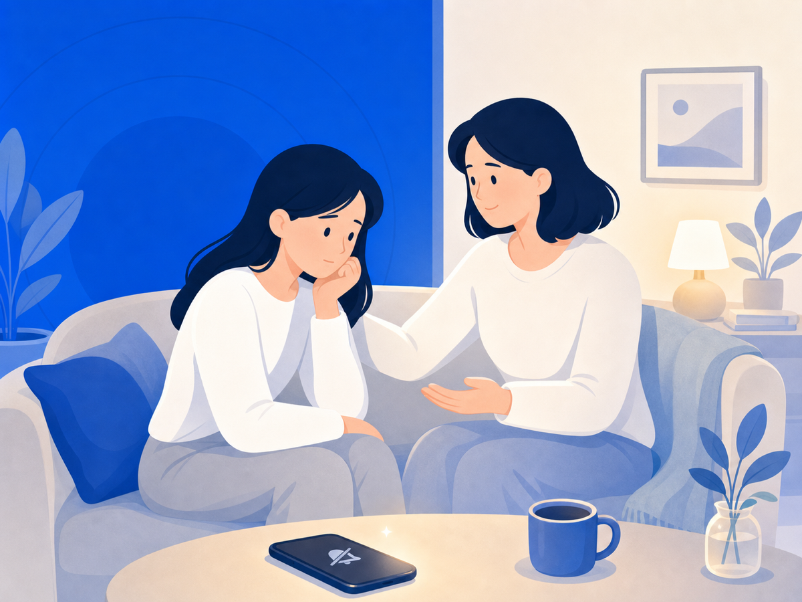

"가까운 사람이 악플 피해를 겪고 있을 때, 어떻게 곁에 있어줄까요"


"그냥 무시하면 안 돼?", "신경 쓰지 마"라는 말이 나오는 건 자연스러워요. 걱정하는 마음에서 나오는 말이니까요. 그런데 피해를 겪고 있는 사람에게 그 말은 "당신의 고통은 별것 아니야"로 들릴 수 있어요.
잘 도와주고 싶은데 어떻게 해야 할지 모를 때, 이 글이 조금이나마 길잡이가 됐으면 해요.
먼저 들어주세요 — 해결책보다 공감이 먼저예요
보호자나 지인이 처음에 가장 많이 하는 실수는 피해를 축소하거나 해결책을 먼저 내놓는 거예요. "그게 뭐 대단하다고", "그냥 계정 삭제해버려"처럼 빠른 해결을 제시하면, 피해자는 자신의 고통을 이해받지 못한다고 느껴요.
사이버불링 피해에서 가장 중요한 건 공감과 경청이에요. 심리적 안전감을 주는 것이 먼저예요. "많이 힘들었겠다", "그런 일을 겪었구나"라는 말이 어떤 해결책보다 앞서야 해요.
자기 탓으로 돌리지 않도록 함께 있어주세요
피해자는 종종 "내가 뭘 잘못했을까"라며 자기 비난을 시작해요. 악플이나 사이버폭력의 책임은 피해자에게 없어요. 그 사실을 반복해서, 부드럽게 확인해 주는 것이 조력자의 중요한 역할이에요.
신뢰할 수 있는 어른이 진심으로 신경 써준다고 느낄 때, 피해자의 스트레스는 훨씬 낮아져요.
함께 할 수 있는 실질적인 도움
공감이 먼저지만, 실질적인 도움도 필요해요.
- 차단과 신고: 피해자가 직접 하기 힘들어할 때 곁에서 함께해요. 각 플랫폼의 신고 기능과, 필요하면 방송통신심의위원회(www.kocsc.or.kr) 또는 경찰 사이버범죄 신고시스템(ecrm.police.go.kr)을 활용할 수 있어요.
- 증거 수집: 직접 악플을 들여다보는 일은 피해자에게 이차 피해가 돼요. 조력자가 대신 화면을 캡처하거나 정리하는 것이 더 나을 수 있어요.
- 전문가 연결: 피해가 심각하다면 청소년상담전화 1388(청소년 대상), 또는 사이버범죄 피해자 지원기관에 함께 연락하는 걸 권해요.
그래서 오늘 할 수 있는 건
옆에 있는 것만으로도 정말 큰 힘이 돼요. "내가 같이 있을게"라는 한마디가 전문 지식보다 먼저예요. 증거 정리나 신고처럼 피해자가 혼자 하기 버거운 일을 당신이 대신 맡아줄 수 있다면, 그 사람은 회복에 집중할 수 있어요.
혼자 견디지 않아도 돼요. 그리고 당신도 혼자 도우려 하지 않아도 돼요.
이 글은 일반 정보예요. 구체적인 일은 전문가(상담·변호사)와 상의하세요. 많이 힘들 땐 자살예방상담 109(24시간)가 있어요.